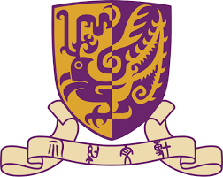

Yimou(Kevin) Wu
4th-year Undergraduate Student
Computer Science and Engineering
Biography
I'm a 4th-year undergraduate student in the Department of Computer Science and Engineering at The Chinese University of Hong Kong, Shenzhen (CUHK-SZ), advised by Prof. Huihuan Qian. My research interest lies in Robotics and Machine Learning. I aim to develop advanced control algorithms and intelligent systems for robotic applications.
My research experiences include working on Model Predictive Control (MPC) development for robot manipulators under the guidance of Prof. Huihuan Qian, where I implemented MPC control systems for a 7-DOF robotic arm using CasADi and ROS. This project deepened my understanding of kinematic logic and control algorithm development.
I have also worked as an Undergraduate Research Assistant on Electrocorticography (ECoG) and speech separation in Brain-Computer Interface research under Prof. Haizhou Li, focusing on signal processing and data analysis relevant to handling sensor data in robotic systems.
If you are interested in working with me or have any suggestions, please feel free to contact me via email.


News
- [05/2024] Began work as URA in AIRS under Postdoc Ruoyu Xu.
- [01/2024] Joined Development of a Load Generator project.
- [08/2023] Completed summer program at UC Berkeley.
- [09/2022] Started Undergraduate Research Assistant position at Prof. Huihuan Qian's lab.
Education
|  |
The Chinese University of Hong Kong, Shenzhen Bachelor of Computer Science and Engineering (CSE)
Sep. 2021 - May 2025
|
|
|
University of California, Berkeley Summer International Undergraduate Visitor
Jun. 2023 - Aug. 2023
|
|
|
Shenzhen Middle School High School Diploma
Sep. 2018 - Jun. 2021
|
Selected Publications
Research Experience
Model Predictive Control (MPC) Development for Robot Manipulators
Undergraduate Research Assistant, Supervisor: Prof. Huihuan Qian & Postdoc Ruoyu Xu
Sep. 2022 - Present, Shenzhen, China
- Combined MATLAB with CoppeliaSim to implement MPC-based joint control for a robotic arm and UAV; improved the robotic arm's grasping algorithm, increasing precision by approximately 10%.
- Performed comprehensive literature review on robotic arms to propose innovative ideas for advancing kinematic control during group meetings.
- Achieved high-precision docking and seamless object handoffs between the robotic arm, UAV, and vessel in dynamic environments.


Internship Experience
Shenzhen Institute of Artificial Intelligence and Robotics for Society (AIRS)
Undergraduate Research Assistant, Supervisor: Ruoyu Xu
May 2024 - Nov. 2024, Shenzhen, China
- Developed a motion capture-based MPC system in field experimental settings using CasADi and ROS for controlling a 7-DOF robotic arm in UAV and vessel object transfers.
- Achieved a 10% improvement in grasp accuracy by enhancing the robust MPC algorithm.
- Upgraded the grasping code to incorporate follow-and-grab functionality, increasing robustness under shaking conditions.

Projects
SSC INTERN – An Internship Platform for CUHK-Shenzhen
Team Leader
Feb. 2022 - Jun. 2024, Shenzhen, China
- Led a team to design and implement core components of the internship platform using PHP, focusing on backend development and user authentication processes.
- Conducted market research to identify key user groups, resulting in a tailored user experience for over 1,200 active users.
- Oversaw front-end and back-end integration, contributing to significant growth in user adoption across universities.